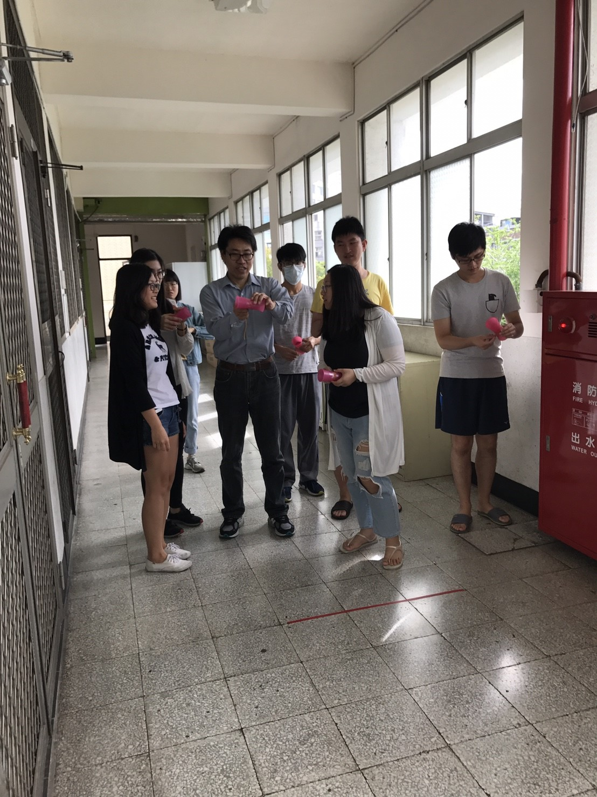

社群簡介
創新教學內容亮點
經驗分享
隨著近年數位製造工具(3D列印機、數位切割機、數位雷射雕刻機、3D設計軟
體)的蓬勃發展，讓教師逐漸能夠利用數位科技的協助來製造教學所需的各項教
具：例如實物模型、機械構造、概念模型、原理模型等等。本計畫希望透過社
群合作探討如何具體提升教師進行教具設計與製作的能力，並進一步能利用所
設計的教具提升教學內容。社群由熟練操作數位製造工具教師擔任核心教師，
與社群其他教師共同開發符合教學需求的教材與教具。實施方式包括：教學觀
摩、工作坊、教師課程互訪等活動，以促進社群教師共同提升教具設計製作能
力，並增進教學效能。


執行策略

社群營造
社群的營造需要無私奉獻與分工合作，以提升教學，增進學生學習為發展目的。利用資源分享、想法交流、互助合作以尋求協助社群教師建立教育專業能力，共同努力提升高教教學能量與發展品質。

教學專業能力的提升
透過教師在課程間互訪，能實質增進對彼此教學現況的了解，以發展互助合作的機會。不同專業教師利用交換教學對象，可以增進了解對不同領域學生的學習需求，促使教師探索改變教學方式與內容的可能性。教師亦能自其他教師的教學中進行學習：包括教學法、教學內容、專業知識、教室管理、課程設計等與教師教學專業發展或專業內容知識相關等。

教學資源分享
在當今對於教育品質的要求提高的前提下，但教育資源卻日漸萎縮的時代趨勢下，如何善盡教學資源，以求最大效益，應是當代教師尋求改善教學品質的一種可能方式。因此，透過不同領域的教學合作，教學資源可以互相分享，一方面減少購置新設備以使經費能更有效運用，一方面增加設備使用頻率及運用的面向。共同達到減少資源浪費，有效提升教學品質的目的。

發展大學以教學為主的共識
過去因大學評鑑促使各大學過度偏重研究，以致輕忽教學的原始社會責任，造成今日台灣高等教育品質日漸低落，學子能力亦趨下滑的不爭事實。沒有具競爭力的下一代，何來高等教育往上提升的量能。自古以來，往往只有嚴師
出高徒，從未見過學生指導老師會培養出大師!嚴格淘汰制在此教育風潮下被視
作毒藥，人人唯恐避之不及，從教育根源看來，是多麼地諷刺與荒謬!唯有重拾
尊師重道，力行合理淘汰制，讓教師願意以教育英才為己任，才有可能讓台灣
高教重新站起來。否則，任何短暫的改進，都僅能是曇花一現，過往雲煙，徒
費勞力而已!